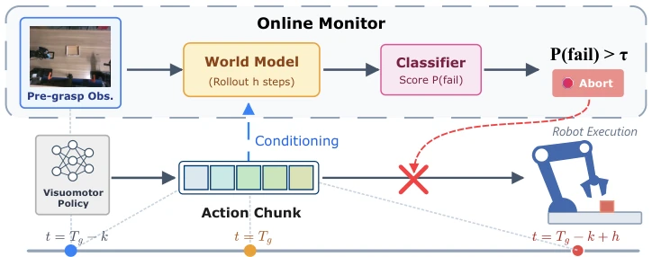
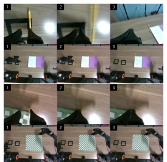

This paper equips robots with a "pre-contact safety belt". ContactGuard does not engage in fancy pixel-level video generation, but uses JEPA principles to predict action consequences in latent space. The advantage is speed and low computational overhead; the disadvantage is it only knows how to "emergency brake", not "reverse parking". Compared to those post-hoc detector-style detectors, it indeed prevents slips in advance, but once aborted, it is done, relying on external recovery. It counts as adding a reliable "co-pilot" to black-box policies, although it cannot repair the car, at least it prevents crashing into walls. However, it relies on specific trigger mechanisms (e.g., grasp closure), generalization needs verification, and support for long horizon tasks is insufficient.
In contact-rich tasks, once contact failure occurs, it is often irreversible. Existing methods such as FAIL-Detect [18] or SAFE [20] mostly rely on post-contact signals or extensive labeling, making it difficult to intercept before contact. Especially from the wrist camera perspective, action deviations before contact have already caused object disturbance. Chunked strategies naturally contain interaction events, suitable for consequence prediction. We need a monitor that does not modify the underlying policy and can veto in advance. Existing work like SIRIUS [23] although trains jointly, ContactGuard emphasizes policy decoupling, being more flexible as an external validator.
Overall divided into training and deployment. During training, unlabeled trajectories are used to train a multi-view JEPA world model, predicting future latent states conditioned on actions. After freezing the model, a logistic regression probe is trained on a few labeled pre-contact segments, with input being the predicted future latent states. During deployment, the monitor triggers k steps before grasp closure, rollout the model based on policy action blocks, and abort if failure probability exceeds threshold. The core innovation is "predicting future latent states" rather than current states, and decoupling policy and monitoring. Multi-view encoding fusion compensates for occlusion, the probe uses only linear layers to ensure generalization. In specific architecture, ViT-Tiny encodes multi-views, AdaLN condition Transformer predicts latent states, SIGReg regularization prevents collapse. Training objective is next latent state regression, accompanied by SIGReg regularization to avoid dimensional collapse. The probe adopts L2 regularized logistic regression, handling class imbalance.

Figure 1: Pre-contact online monitoring via action-conditioned latent world models. While a visuomotor policy executes an action chunk, ContactGuard conditions a frozen latent world model on the same planned chunk at an anchor k steps before the planned gripper closure Tg. It rolls the model forward h steps and scores the predicted future latent with a lightweight classifier. If P(fail) > τ, execution is aborted before contact: the decision is made at Tg−k and targets the post-contact moment Tg−k+h, so foreseen failures can be prevented rather than merely detected. At deployment, ContactGuard runs alongside an existing chunked visuomotor policy as a policy- decoupled predictive verifier. The deployed policy is treated as a black-box proposer: ContactGuard consumes only the current observat
实验Experiments
在 Cup, Box, Pencil, Towel 四个真实机器人任务上测试。对比 Direct-linear, LeWM, Current latent 及外部检测器。ContactGuard 在 AUC 和平衡准确率上全面领先，尤其是 FAR 显著降低。消融显示动作条件至关重要，打乱动作后性能崩塌。多视角融合优于单视角。有趣的是加入本体感觉反而降低性能，说明视觉动态更关键。推理时间满足实时性，单步仅 19ms。在真实机器人上，能成功拦截错误抓取，且不影响策略执行。
Tested on four real robot tasks: Cup, Box, Pencil, Towel. Compared with Direct-linear, LeWM, Current latent, and external detectors. ContactGuard leads comprehensively in AUC and balanced accuracy, especially FAR significantly reduced. Ablation shows action conditioning is crucial, performance collapses after shuffling actions. Multi-view fusion is superior to single-view. Interestingly, adding proprioception instead reduces performance, indicating visual dynamics are more critical. Inference time meets real-time requirements, single step only 19ms. On real robots, it can successfully intercept wrong grasps, and does not affect policy execution.

Figure 5: Qualitative examples on the pencil-and-notebook and towel-fold tasks. Each panel shows a rollout that is classified correctly.